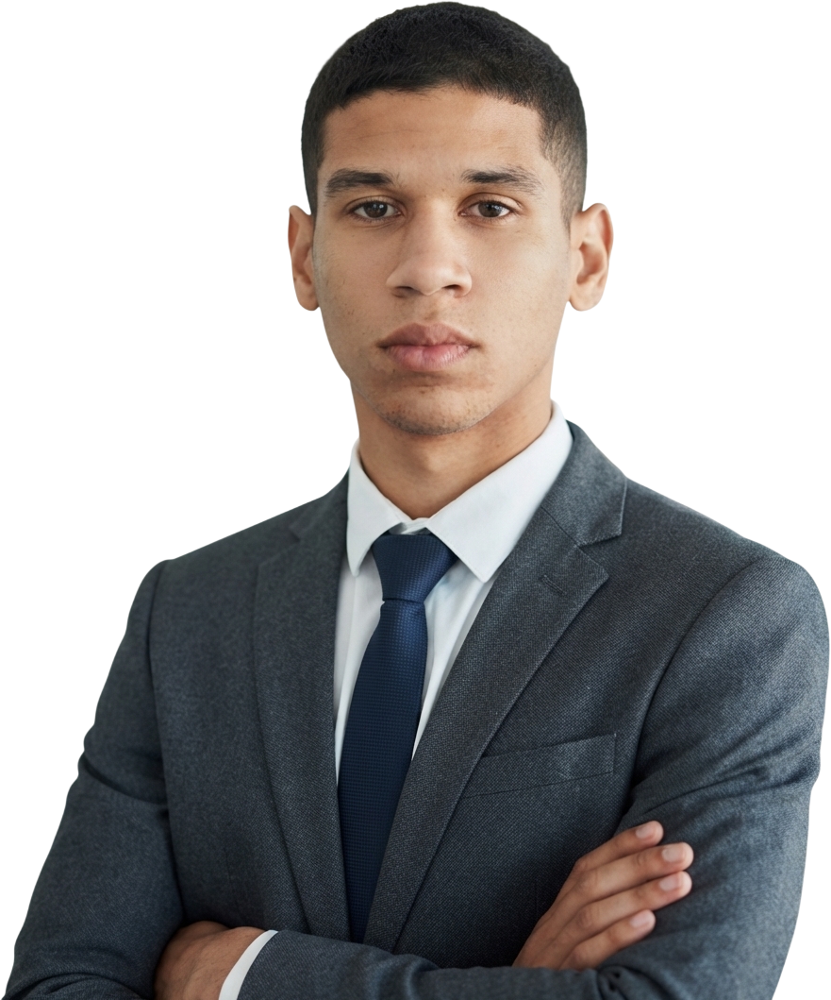

Sobre Mí
Técnico Superior Universitario en Informática y Desarrollador Fullstack con sólida experiencia en la digitalización y optimización de procesos operativos empresariales. Me especializo en identificar cuellos de botella y crear soluciones automatizadas (software, hardware IoT e Inteligencia Artificial) que reducen costos, minimizan errores manuales y facilitan la toma de decisiones gerenciales.
Combino el desarrollo de sistemas con habilidades prácticas en soporte técnico de infraestructura, administración de redes, mantenimiento de equipos informáticos y dominio avanzado de herramientas de ofimática para garantizar la continuidad operativa.

Trayectoria
Qbits LLC
julio 2025 — agosto 2026Identifiqué tareas manuales repetitivas que consumían tiempo productivo del equipo y desarrollé flujos de automatización integrando herramientas agénticas e Inteligencia Artificial, reduciendo significativamente la carga administrativa. Diseñé e implementé paneles directivos de monitoreo (Dashboards interactivos) que centralizan información compleja y permiten a gerencia evaluar métricas operativas en tiempo real. Participo activamente en dinámicas ágiles (Scrum) y colaboro en la revisión técnica del trabajo de mis compañeros (code reviews). Aseguro que las plataformas y bases de datos corporativas operen de manera continua, segura y sin interrupciones, gestionando despliegues estables mediante entornos controlados (Docker).
Alphat Services LLC
marzo 2025 — mayo 2025Colaboré en la modernización de la plataforma comercial y de servicios de la empresa, implementando mejoras directas en la usabilidad y velocidad de carga para optimizar la experiencia del usuario final. Trabajé en entornos colaborativos remotos utilizando herramientas de gestión por objetivos (Trello y Scrum), cumpliendo puntualmente con las metas asignadas en cada ciclo de trabajo.
Formación
Instituto Universitario de Tecnología de Administración Industrial (IUTA)
2023 — 2025Graduado con Honores, con formación integral en análisis de sistemas, optimización de procesos y redes informáticas, destacando por una visión analítica y orientada a la resolución de problemas tecnológicos complejos.
Trabajos Seleccionados
Diseño UI/UX, Aplicación Web
Diseño Móvil, iOS & Android
Identidad de Marca, Diseño Web
Diseño de Producto, Fintech
Contacto
¿Tienes un proyecto en mente o solo quieres saludar? Siempre estoy abierto a discutir nuevas oportunidades e ideas creativas.
jes99.444.rodriguez@gmail.com